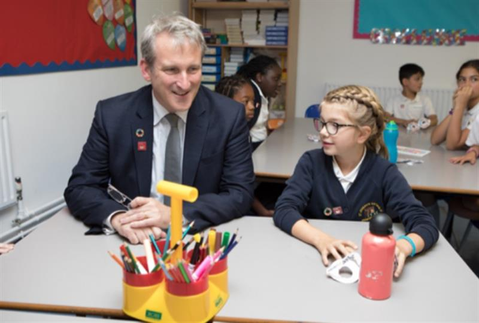
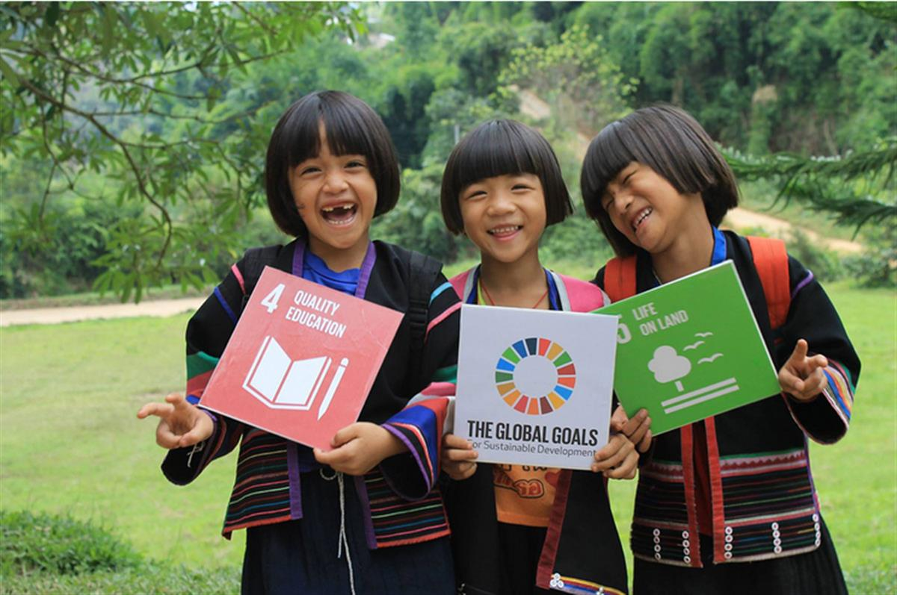
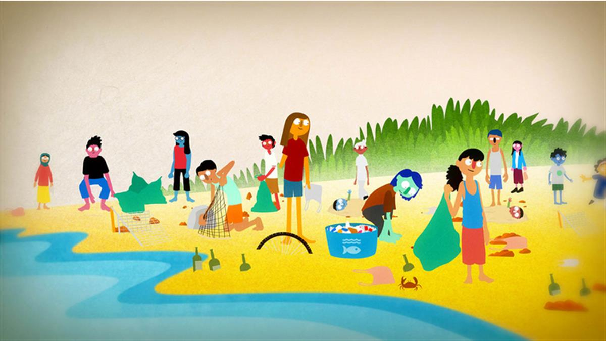
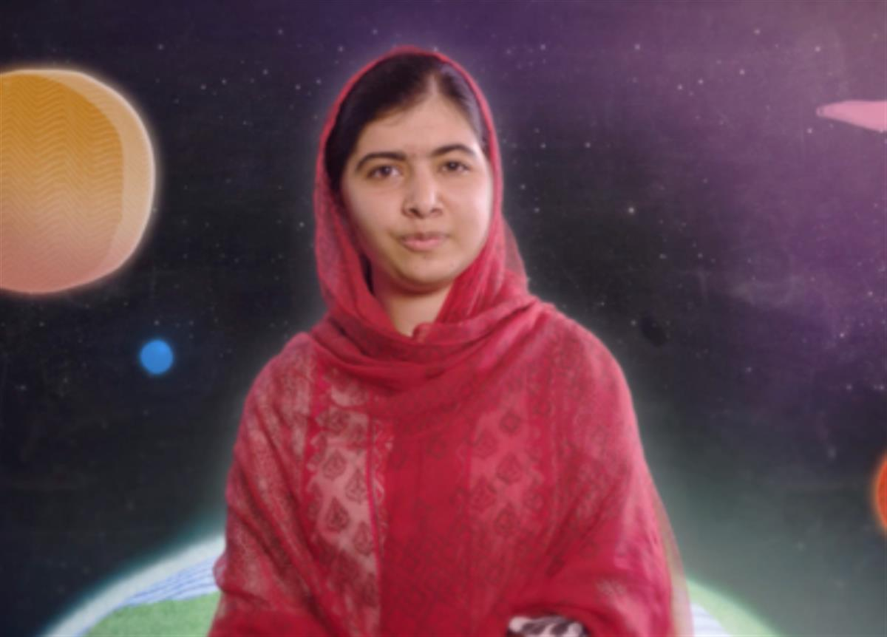
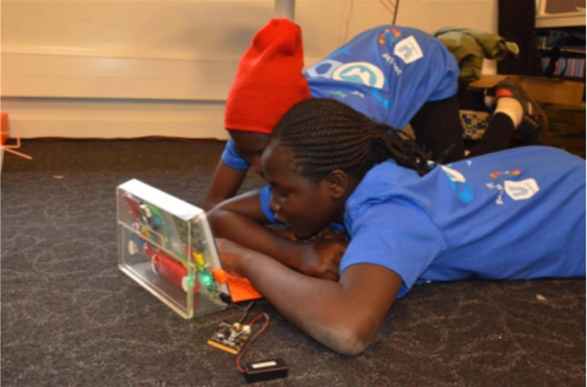
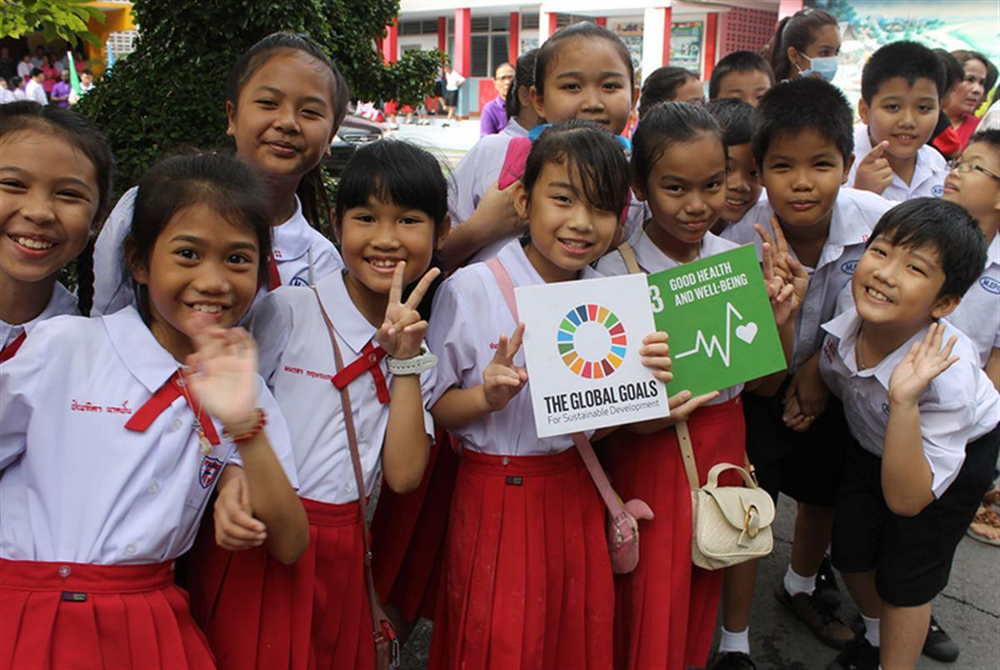

World’s Largest Lesson is an on-going initiative from Project Everyone delivered in partnership with UNICEF and many other organisations to bring the Global Goals to children across the world.
World’s Largest Lesson is an on-going initiative from Project Everyone delivered in partnership with UNICEF and many other organisations to bring the Global Goals to children across the world.
Since launch in September 2015, schools in over 130 countries have annually engaged millions of children in the World’s Largest Lesson and encouraged action for the Goals.
Through strong partnerships with Ministries of Education and other government departments, UN agencies, NGOs, the education private sector, youth organisations and the global teachers community we encourage active participation in Global Goals learning. World’s Largest Lesson has now become an established moment in the calendar of a number of countries, with Ministers of Education taking part in lessons themselves.

UK Secretary of State for Education, Damian Hinds MP taking part in a World’s Largest Lesson September 2018.
We ask that you consider national participation in the World’s Largest Lesson as an opportunity and not an obligation. It is an opportunity to shape the values and attitudes of the children and young people who will inherit our world.
Joint letter to all Ministers of Education May 2018
Henrietta Fore, Executive Director of UNICEF
Audrey Azoulay, Director General of UNESCO
We create free, flexible and open source resources in over 10 languages to enable anyone to teach the Goals. Our creative resources are developed with the aim that every teacher has the capacity to teach the Goals and students feels personally connected to the Goals, empowered to take immediate action and set on a path to global citizenship.

Three films from Oscar winning Aardman animations and Sir Ken Robinson set a context for the Goals and encourage student engagement and action. These animations are introduced by a range of high-profile figures in native languages such as; Malala Yousafzai, Serena Williams, Neymar Jr, Kolo Touré, Emma Watson, Hrithik Roshan, Nancy Ajram and Queen Rania of Jordan.


To engage young people and educators deeply in the Goals they are then invited to take part in real world projects, challenges and social action that establish the Goals as the purpose for developing 21st century skills.

Solving problems for the Goals using techonology in Kenya, July 2018

SOURCE: WORLD'S LARGEST LESSON
SOURCE: PROJECT EVERYONE